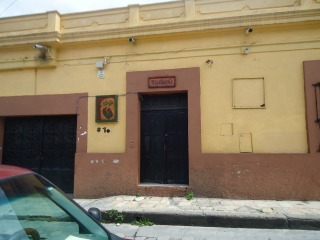
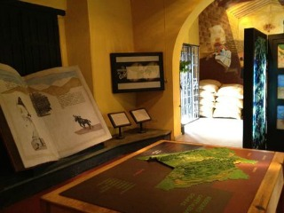
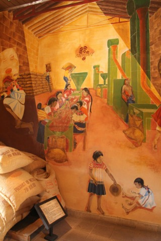
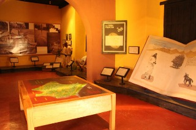
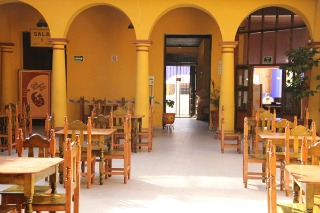

El Museo Café es un espacio que rescata una antigua casa colonial para dar a luz una cafetería y un museo. La cafetería cuenta con diferentes marcas de café orgánico, puro y de mezcla, con distinta procedencia. Este museo es la recompensa de una lucha justa llevada a cabo por la unión de pequeños productores de café del Estado de Chiapas. El Museo Café nace con la idea de dar a conocer la historia de pequeños productores campesinos, indígenas tzotziles, tzeltales, choles y españoles y posicionar su café a nivel nacional e internacional, compitiendo frente a los grandes productores con mejor calidad y precios.
Se encuentra ubicado en la Calle Maria Adelina Flores a una cuadra y media de la catedral.
Si usted se encuentra ubicado en la plaza de la paz viendo de frente hacia la catedral puede caminar hacia su izquierda como referencia encontrará la Zapateria Catedral y Frente a este el Restaurant VIA VAI de vuelta a la derecha al terminar y avance una cuadra sobre la calle Maria Adelina Flores, como referencia al llegar a la esquina encontrará el TequilaZoo y continue caminando aproximadamente media cuadra más.
En el lugar usted puede realizar actividades como:
* Fotografía
* Compra de Artesanía
* Visita a lugares históricos
* Visita a Museos





posicione el mouse sobre las imágenes